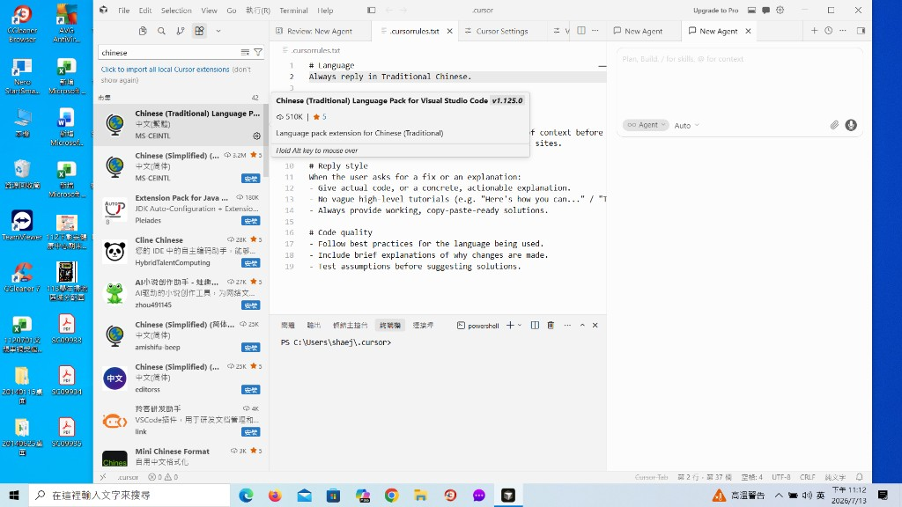
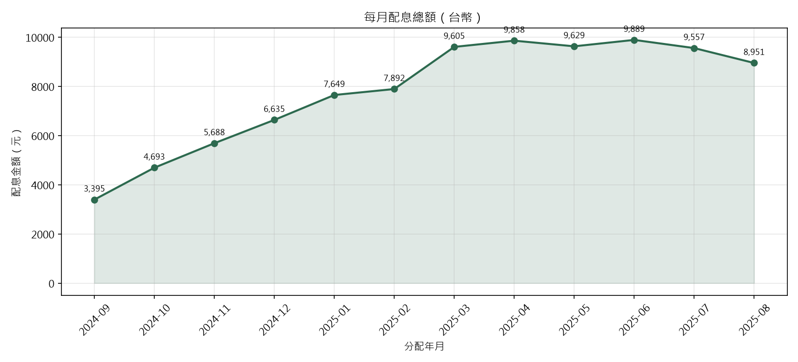
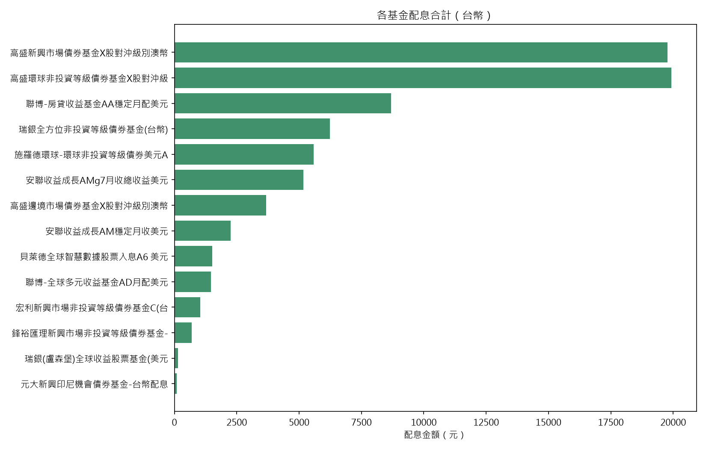
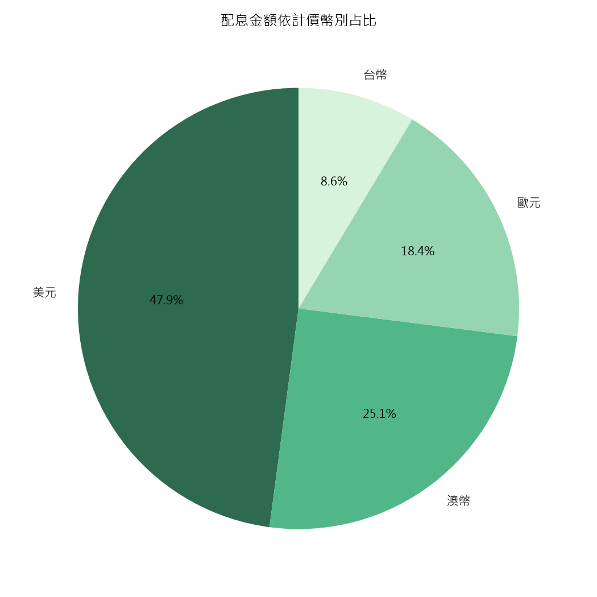

20260713 Chinese（繁體）和 Excel 檔拉進對話框，生出分析圖在電腦目錄中
安裝繁體中文語系後，把 Excel／CSV 拉進 Cursor 對話框，請 Agent 分析並把圖表存到本機資料夾。
成果一｜Chinese（繁體）語系

.cursorrules.txt 指定 Always reply in Traditional Chinese成果二｜Excel 拉進對話框 → 分析圖存到電腦目錄
將桌面 年度收入.csv（或 Excel）路徑／檔案放入對話框，請 Agent 分析並產出圖表。圖檔位置：
C:\Users\shaej\Desktop\年度收入_分析\



重點整理
- 語系：Chinese (Traditional) Language Pack +
.cursorrules.txt - 做法：把 Excel／CSV 拉進（或貼上路徑到）對話框
- 產出：分析圖寫入本機目錄
桌面\年度收入_分析\